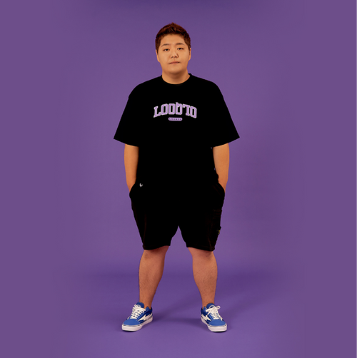
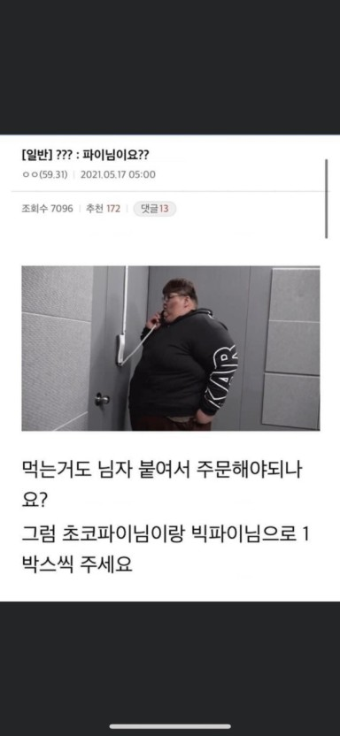
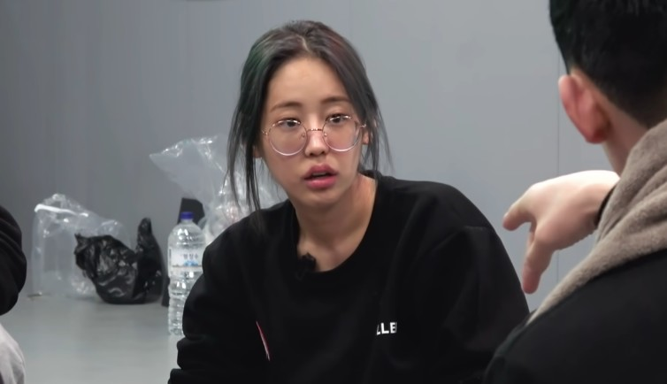
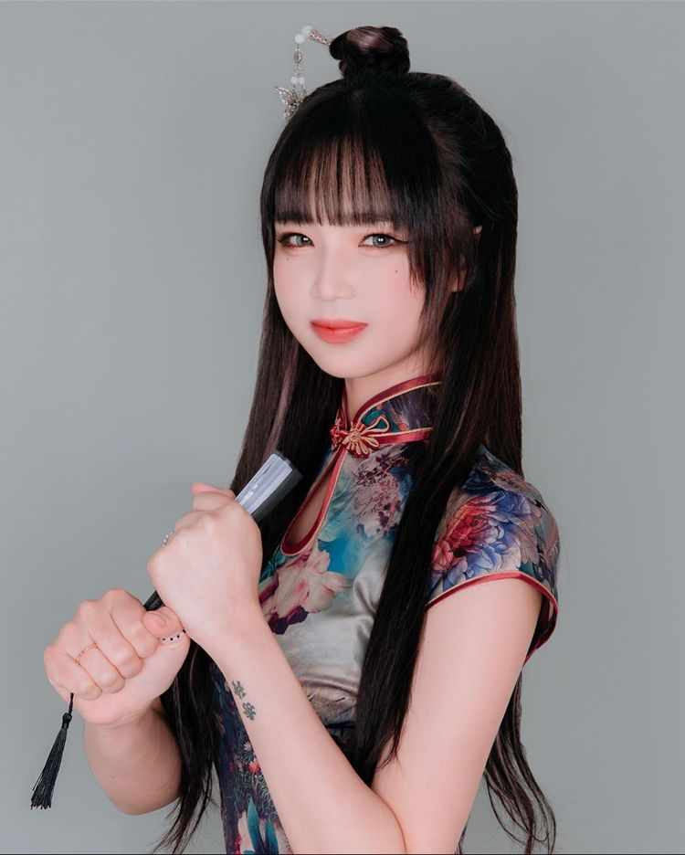
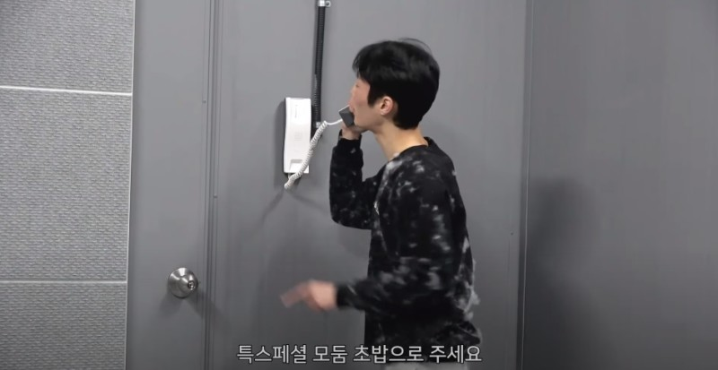
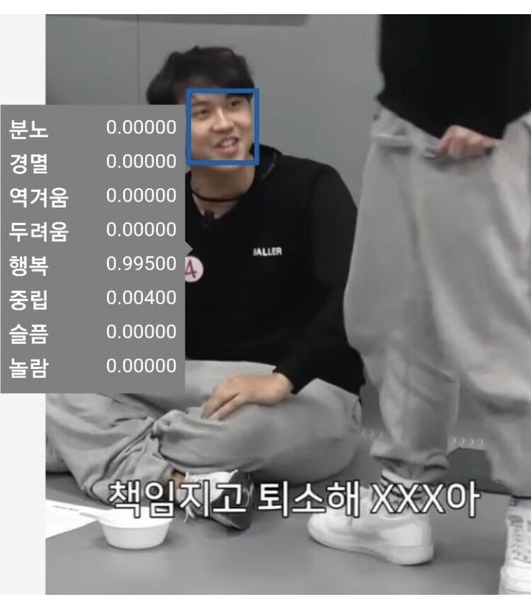
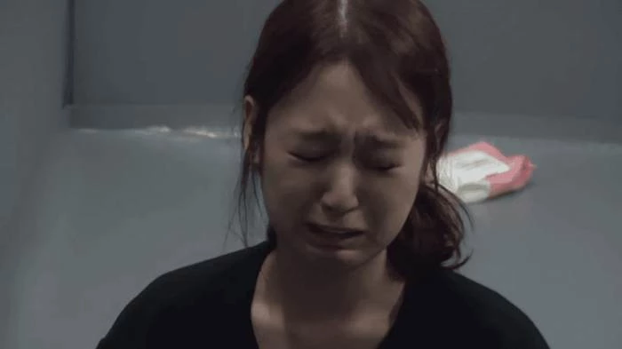
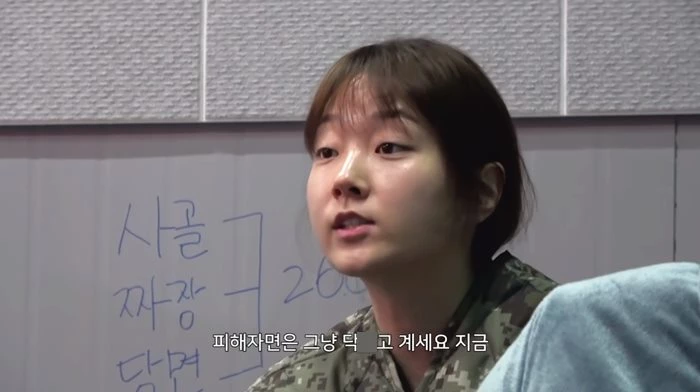
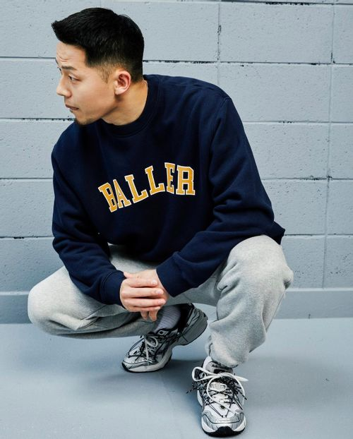
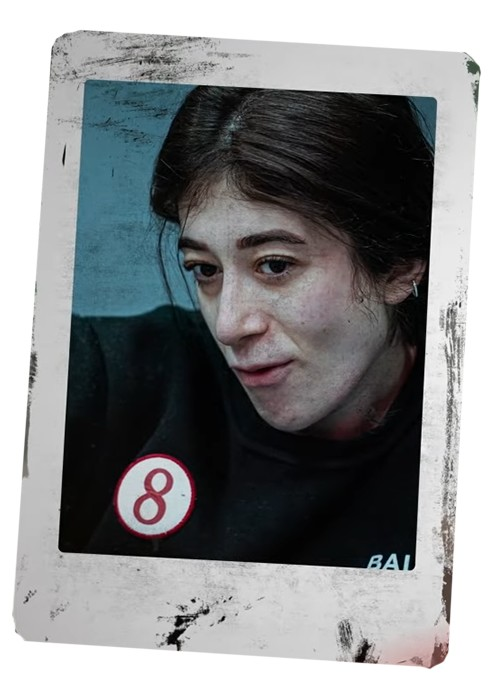

(2019. 4. 2. ~ )
(2019. 4. 2. ~ )
<머니게임 참가자>
1번 방 공혁준 (INFP) - 8일차 탈락

출생 1992년 12월 18일 (28세) 대구직할시 북구
거주지 서울특별시 강동구
국적 대한민국
신체 172~173cm 99.96kg → 111.76kg → 103~104kg
병역 사회복무요원 마크 사회복무요원 소집해제
학력 경진중학교 (졸업) 대구공업고등학교 (졸업) 대경대학교 (동물조련학 / 중퇴)
MBTI INFP-T
소속
골든코인 (~ 2016)
(2019. 4. 2. ~ )
2번 방 전현배 (ENTP) - 1일차 자진 퇴소

본명 전현배 (Jeon Hyun-bae)
출생 1993년 3월 25일 (28세)
신체 189cm, 246kg
플랫폼 현황 유튜브 아프리카TV
SNS 인스타그램
2번 방 육지담 (ENTP) - 6일차 자진 퇴소

출생 1997년 3월 10일 (24세) 대구광역시
신체 170cm, A형
가족 아버지
학력 정신여자중학교 (졸업) 영동일고등학교 (졸업) 동덕여자대학교 (방송연예학과 / 재학)
특기 복싱, 킥복싱
별명 힙합밀당녀
데뷔 2014년 Mnet '쇼미더머니3'
2번 방 산범 (INFP) - 10일차 탈락

본명 정수영 (鄭秀玲, Jung Soo-young)
출생 2001년 2월 11일[1] (20세)
거주지 경기도 파주시
신체 171cm, 63.9kg, 260mm, B형
가족 관계 할아버지, 할머니, 부모님, 남동생 정현영(2003년생), 여동생 정가영(2006년생) 반려 동물 산초(반려묘), 깜순이(반려견)
학력 고봉초등학교 (졸업) 중산중학교 (졸업) 일산국제컨벤션고등학교 (컨벤션비즈니스과 / 졸업)
취미 랩, 골프
특기 아이키도, MMA
별명 1짱 산범
소속 램스튜디오
3번 방 박준형 (ESTP) - 11일차 탈락

출생 1989년 12월 22일 (31세) 경상북도 휘장 경상북도 구미시 CI 구미시
학력 천안북중학교 (졸업) 천안농업고등학교 (졸업)
신장 약 172cm
소속 쿠쿠크루
SNS

4번 방 논리왕 전기 (ENTJ) - 8일차 탈락

본명 김건호 (Kim Gun-ho)
출생 2000년 2월 22일 (21세) 거주지 서울특별시 휘장 서울특별시 강북구 CI 강북구 수유3동
국적 대한민국 국기 대한민국
신체 181cm, 85kg, O형
가족 양친, 1남 1녀 중 막내 학력 청학동 대안학교 (졸업) 중학교 졸업 학력 검정고시 (합격) 서울도시과학기술고등학교 (전자통신과 / 졸업)
병역 미필
종교 무종교
보유 자격증 전기기능사
취미 토크온, 등산, 루어낚시, 기타 격투기반 흑룡천무궁 무에타이
직업 웨폰 마스터, 마그토늄 광부, 건설 노동자, 유튜버
별명 건호게이, 런호게이
5번 방 이루리 (INFP) - 우승, 상금 75,848,615원

본명 장서현 (張瑞玹, Jang Seo-hyun)[1]
출생 1995년 1월 19일 (26세)
출신지 경기도 휘장 경기도 수원시 CI 수원시
거주지 경기도 휘장 경기도 성남시 CI 성남시
신체 160cm, 44kg
발 사이즈 225~230mm
학력 동국대학교 (서양화과 전공 / 재학)
소속 트레져헌터 로고[2]
구독자 애칭 새싹
6번 방 파이 (INFP) - 9일차 자진 퇴소

본명 강다온 (康多昷, Kang Da-on)
국적 대한민국 국기 대한민국
출생 1992년 12월 30일 (28세)
신체 162cm, 53kg, 65C
혈액형 A형
거주지 경기도 파주시
학력 동국대학교 (영화영상학과 / 휴학)
가족 반려견 파덕이
팬네임 3.14, 파이♥
7번 방 가오가이 (ENTP) - 9일차 탈락

예명 가오가이 (kaogaii)
본명 백한솔 (Baek Han-sol)
생년월일 1991년 2월 18일 (30세)[1]
국적 대한민국
신체 174cm, 72kg
가족 양친, 2남 중 차남
그룹 호프갱 (HOFGANG)
레이블 LBNC
별명 물소가이
8번 방 니갸르 (ESTP) - 우승, 상금 75,848,615원

본명 니갸르 에이유보바 (Nigar Eyyubova)[1]
출생 1993년 12월 23일 (27세) 아제르바이잔 바쿠
거주지 부산광역시
국적 아제르바이잔 국기 아제르바이잔
신체 165cm, 62kg, 250mm
학력 바쿠 국립대학교 (언론학 / 학사) 고려대학교 대학원 (미디어학 / 석사)
가족 어머니, 남동생
종교 무종교
특기 유도, 헬스